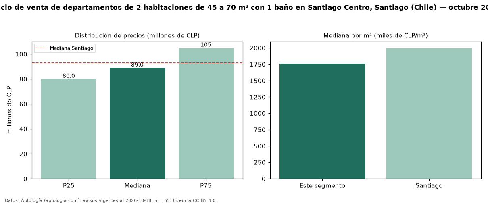

Precio de venta de departamentos de 2 habitaciones de 45 a 70 m² con 1 baño en Santiago Centro, Santiago (Chile) — octubre 2026
CLP 89 millones es el precio mediano de departamentos de 2 habitaciones de 45 a 70 m² con 1 baño en venta en Santiago Centro, Santiago (Chile) (n = 65 avisos). Eso es 11 % menos que la mediana de los departamentos de 2 habitaciones de 45 a 70 m² en venta de Santiago Centro (CLP 100 millones, n = 160); este segmento reúne el 41 % de esos avisos. Por metro cuadrado, la mediana es CLP 1,76 millones/m² (n = 64), 7 % por debajo de los departamentos de 2 habitaciones de 45 a 70 m² en venta de Santiago Centro (CLP 1,88 millones/m²). El área mediana anunciada es 50 m². La mediana de todos los departamentos en venta de Santiago es CLP 93 millones (−4 % de diferencia). La mitad central de los avisos va de CLP 80 millones a CLP 105 millones (razón 1,3), una dispersión baja. Datos: Aptología (aptologia.com), CC BY 4.0 — https://www.aptologia.com/cl/venta/santiago/santiago-centro. Archivos: PDF, CSV con las cifras y gráfica PNG.

| Avisos únicos | 65 |
|---|---|
| Percentil 25 | COP 80.000.000 |
| Mediana | COP 89.000.000 |
| Percentil 75 | COP 105.000.000 |
| Mediana por m² | COP 1.756.666 |
Fuente: avisos vigentes de portales inmobiliarios recopilados por Aptología, deduplicados (mínimo 30 avisos únicos por celda). Precios pedidos, no cerrados. Fecha: 2026-10-18.